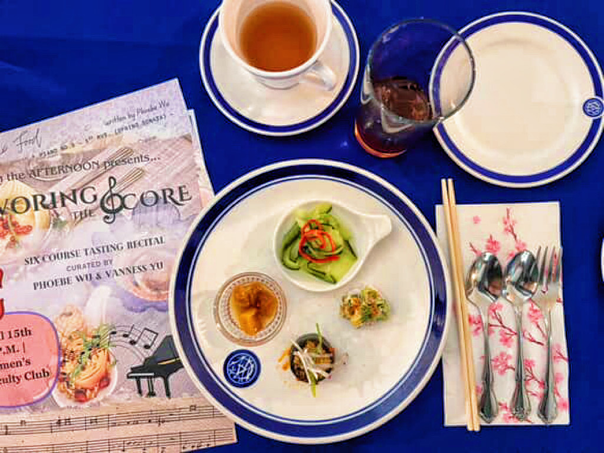
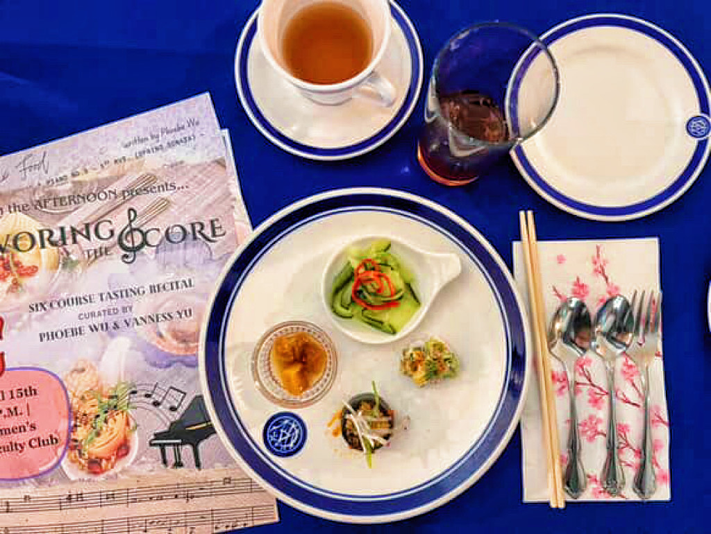

About Us
Herban Omnivore is my love letter to food as a vessel for memory, connection, and sensory storytelling. What began as a student-run pop-up kitchen in Berkeley has grown into a personal culinary practice where I aim to create immersive experiences that explore the intersection of food, art, music, and community. Inspired by global traditions and nostalgic Taiwanese flavors, I craft pop-ups, tastings, and events that celebrate sustainable and reflective eating. Each menu is a curated journey—rooted in seasonality, emotion, and imagination. I also offer private chef and catering services for those looking to bring a touch of this experience into their own space!


🌟 Featured: Savoring the Score
What happens when flavor listens to melody? This signature event pairs a live violin recital with a seasonal tasting menu, guiding you through rhythm, memory, and taste.
View the ExperienceThis reel offers a glimpse into the dishes and experiences I curated in 2024! Whether it was an interactive, memory-driven tasting experience built around themes of identity and transition, or a reimagination of traditional Taiwanese street food through a plant-based lens and intimate discussions about cultural resilience in the sustainable food space, we invite you to join us on the forever-evolving journey of sustainable, intentional, and sensory dining!
Event Gallery
Spring 2025 - Savoring the Score
This event is a very experimental exploration of something I’ve been thinking about for a while—the relationship between our senses, especially hearing and taste. We’re all familiar with how music can enhance a dining experience—restaurants carefully curate playlists to set the mood, and there’s even growing research on how listening to certain types of music while eating can shape how we perceive flavor. But what I’ve noticed is that we rarely ask the opposite question: Can food enhance the way we listen to music? That idea is a little less explored—maybe because of the way we’ve culturally framed concerts. Concert halls and recitals are traditionally spaces of quiet etiquette. Meanwhile, food belongs to the world of restaurants, kitchens, markets—places that are full of sound but not necessarily sound we’re meant to listen to with intention.
So today, we wanted to invite you into a space where those boundaries blur. Where music and food aren’t background or foreground, but equal partners in creating an immersive, sensory experience. When I was selecting repertoire and crafting the menu, I intended to pair each piece of music with a dish designed to reflect or contrast with its emotion, texture, or rhythm. The goal isn’t to analyze—but to feel. To be present. To savor with both your ears and your palate.
 

This event is an exploration of seasonality and transformation. Just as the seasons shape our world, changes define our journeys. Through a six pairings of live violin/piano performances and thoughtfully crafted dishes (six-course afternoon tea tasting menu), we curated an experience where melodies and flavors evolve through storytelling and how the familiar takes on new forms. Whether you are a college student navigating identity and aspirations or someone in any stage of life facing conflict and yearning, this evening is meant to inspire introspection—a moment to pause, listen, taste, and engage in a conversation with your senses and intuition.
Swipe for mini photo gallery!
2024 Spring - Night Market x Dining Table
Night Market x Dining Table featured a fully plant-based menu capturing the whimsical marriage of bold street food flavors and humble gastronomical traditions in Taiwan. The menu reconciles traditions with new experiences, spotlighting nostalgic Taiwanese flavors--from night markets to our dinner tables--with an emphasis on local Californian seasonal produce and global culinary inspirations. Techniques like fermentation and ingredients like soy will be spotlighted as an origin of discourses regarding how culture plays a role in what constitutes as sustainable cuisine.


View the full menu and zine!
Winter 2023 - Contemplate
"Contemplate" featured a gallery of winter Californian produce through a plant-forward approach. The menu was crafted in a way that encourages guests to engage in contemplation from the natural, material, then spiritual realm. The zine features food systems related artwork along with a perspective piece about the conundrum between individual, food ethics, cultural pillars, and normative definitions of sustainble food choices.